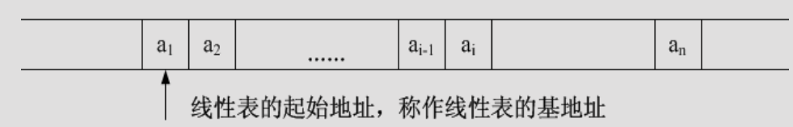
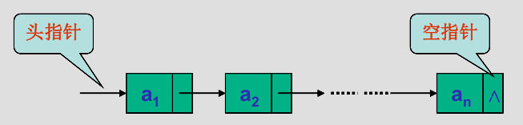
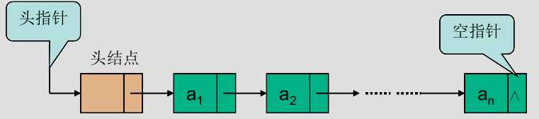
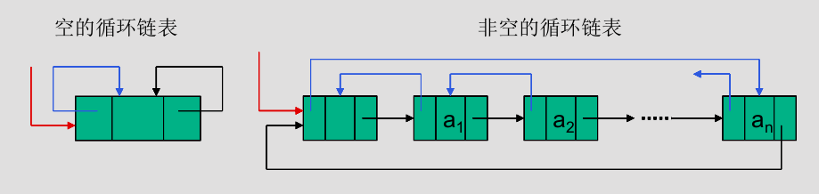

线性表¶
定义¶
由 \(n(n≧0)\) 个数据元素(结点) \(a_1,a_2,...,a_n\) 组成的有限序列，记作
\[
(a_1,a_2,..a_n)
\]
- 数据元素个数n是表的长度
- \(n=0\) 时称为空表
- \(a\) 的下标 \(i\) 称为 \(a_i\) 在线性表中的位序
性质¶
- 在非空的线性表， 有且仅有一个开始结点 \(a_1\) ，它没有直接前趋，而仅有一个直接后继 \(a_2\)
- 有且仅有一个终端结点 \(a_n\) ，它没有直接后继，而仅有一个直接前趋 \(a_{n-1}\)
- 其余的内部结点 \(a_i(2 \leq i \leq n-1)\) 都有且仅有一个直接前趋 \(a_{i-1}\) 和一个直接后继 \(a_{i+1}\)
ADT类型定义¶
- 数据对象 \(D=\{a_i|a_i \in ElemSet, i=1,2,...,n, n \ge 0 \}\)
- 数据关系 \(R1=\{<a_{i-1},a_i>|a_{i-1},a_i \in D, i=2,...,n \}\)
-
基本操作
InitList(&L)- 操作结果：构造一个空的线性表
L。
- 操作结果：构造一个空的线性表
DestroyList(&L)- 初始条件：线性表
L已存在。 - 操作结果：销毁线性表
L。
- 初始条件：线性表
ListInsert(&L,i,e)- 初始条件：线性表
L已存在，1≤i≤LengthList(L)+1。 - 操作结果：在
L的第i个元素之前插入新的元素e，L的长度增1。
- 初始条件：线性表
ListDelete(&L,i,&e)- 初始条件：线性表
L已存在且非空，1≤i≤LengthList(L)。 - 操作结果：删除
L的第i个元素，并用e返回其值，L的长度减1。
- 初始条件：线性表
PutElem(&L, i, &e)- 初始条件：线性表
L已存在，1≤i≤LengthList(L)。 - 操作结果：
L中第i个元素赋值同e的值。
- 初始条件：线性表
GetElem(L, i, &e)- 初始条件：线性表
L已存在，1≤i≤LengthList(L)。 - 操作结果：用
e返回L中第 i 个元素的值。
- 初始条件：线性表
LocateElem(L, e, compare())- 初始条件：线性表
L已存在，compare()是元素比较函数。 - 操作结果：返回
L中第1个与e满足关系compare()的元素的位序。若这样的元素不存在，则返回值为0。
- 初始条件：线性表
PriorElem(L，cur_e，&pre_e)- 初始条件：线性表
L已存在。 - 操作结果：若
cur_e是L中的数据元素，则用pre_e返回它的前驱，否则操作失败，pre_e无定义。
- 初始条件：线性表
NextElem(L, cur_e, &next_e)- 初始条件：线性表
L已存在。 - 操作结果：若
cur_e是L中的数据元素，则用next_e返回它的后继，否则操作失败，next_e无定义
- 初始条件：线性表
ListTraverse(L,visit())- 初始条件：线性表
L已存在，visit()为元素的访问函数。 - 操作结果：依次对
L的每个元素调用函数visit()。一旦 `visit()`` 失败，则操作失败。
- 初始条件：线性表
ClearList(&L)- 初始条件：线性表
L已存在。 - 操作结果：将
L重置为空表。
- 初始条件：线性表
ListEmpty(L)- 初始条件：线性表
L已存在。 - 操作结果：若
L为空表，则返回TRUE，否则返回FALSE。
- 初始条件：线性表
ListLength(L)- 初始条件：线性表
L已存在。 - 操作结果：返回
L中元素个数。
- 初始条件：线性表
存储结构¶
顺序表¶

- 用一组地址连续的存储单元，依次存放线性表中的数据元素
- 以"存储位置相邻"表示位序相继的两个数据元素之间的前驱和后继的关系
- 表中第一个元素的存储位置作为线性表的起始地址，称作线性表的基地址
数据元素的存储位置
假设每个数据元素占据的存储量是一个常量 C，则后继元素的存储地址和其前驱元素相隔一个常量，即： \(LOC(a_i) = LOC(a_{i-1}) + C\) ，由此，每个数据元素的存储位置均可由第一个元素的基地址来表示，即
\[
LOC(a_i) = LOC(a_1) + (i-1) \times C
\]
-
分配方式
#define MAXSIZE 50; typedef struct{ ElemType data[MAXSIZE]; // 存储空间 int length; // 当前长度 }SqList_static;- 当前数组空间不够时，无法增加容量
#define MAXSIZE 50; typedef struct{ ElemType *data; //存储空间基址 int listSize; // 当前允许的最大存储容量 int length; // 当前长度 }SqList_dynamic;- 基地址(
data指针)使用malloc()(C)或new(C++)函数来申请，如果空间不够，可以使用realloc()(C)重新分配 - 通常使用这种动态分配结构作为顺序表表示
-
基本操作的实现
- 时间复杂度为 \(O(1)\)
void InitList(SqList &L， int maxsize) { // 构造一个空的线性表 L if (maxsize == 0) maxsize = MAXSIZE; L.elem = new ElemType[maxsize]; if (!L.elem) exit(1); // 存储分配失败 L.length = 0; // 顺序表的初始长度为0 L.listSize = maxsize; // 该顺序表可以存储元素的最大容量 } // InitListvoid initList(SqList &L) { L.length=0; }- 时间复杂度为 \(O(Length(L))\)
int LocateElem(SqList L, ElemType e，void(*compare)(ElemType， ElemType)) { // 在顺序表L中查找第1个值与 e 满足判定条件compare()的元素， // 若找到，则返回其在 L 中的位序，否则返回0。 i = 1; // i 的初值为第1元素的位序 p = L.elem; // p 的初值为第1元素的存储位置 while (i <= L.length && !(*compare)(*p++ ，e)) ++i; // 依次进行判定 if (i <= L.length) return i;// 找到满足判定条件的数据元素为第 i 个元素 else return 0; // 该线性表中不存在满足判定的数据元素 } // LocateElem- 时间复杂度为 \(O(Length(L))\)
bool ListInsert(SqList &L，int pos， ElemType e) { // 若存储空间不满且1≤pos≤Listlength(L)+1，则在顺序表 L 的第 pos 个元素前插入新元素 e 且返回TRUE，否则返回FALSE if (pos < 1 || pos > L.length+1) return FALSE;// 位置不合法 if (L.length >= L.listsize) return FALSE;//存储空间已满，无法插入 for (j=L.length-1;j>=pos-1;--j) L.elem[j+1] = L.elem[j];// 插入位置及之后的元素右移 *L.elem[pos-1] = e; // 插入 e ++L.length; // 表长增1 return TRUE; } // ListInsert- 时间复杂度为 \(O(Length(L))\)
bool ListDelete(SqList &L， int pos， ElemType &e) { // 若1≤pos≤Listlength(L)，则以 e 带回从顺序表 L 中删除的 // 第 pos 个元素且返回 TRUE，否则返回 FALSE if ((pos < 1) || (pos > L.length)) return FALSE; // 删除位置不合法 e = *L.elem[pos-1]; for (j = pos; j <L.length；++j) L.elem[j-1] = L.elem[j]; // 被删除元素之后的元素左移 --L.length; // 表长减1 return TRUE; } // ListDelete- 时间复杂度为 \(O(1)\)
void DestroyList(SqList &L) { // 释放顺序表 L 所占存储空间 delete[] L.elem; L.listsize = 0; L.length = 0; } // DestroyList_Sq
链表¶


- 用一组任意的存储单元存储线性表的数据元素
- 对数据元素 \(a_i\) 来说，除了存储其本身的信息之外，还需存储一个指示其直接后继的信息（指针）
- 以第一个数据元素的存储地址作为线性表的基地址，通常称它为头指针，线性表中所有数据元素都可以从头指针出发找到
- 单链表的最后一个元素的指针域是特殊的的，用NULL表示
- 在表示的时候，可能有头结点，也可能没有
- 有头结点时，该结点中指针域的指针指向第一个元素结点，并令头指针指向头结点
-
结构表示
typedef struct LNode{ ElemType data; struct LNode* next; }LNode,*Linklist; -
基本操作
- 时间复杂度为 \(O(1)\)
void InitList(LinkList &L) { // 创建一个带头结点的空链表，L 为指向头结点的指针 L = new LNode; if (!L) exit(1); // 存储空间分配失败 L->next = NULL; } // InitList
- 时间复杂度为 \(O(Listlength(L))\)
void DestroyList(LinkList &L) { // 销毁以L为头指针的单链表，释放链表中所有结点空间 LinkList p = L; while(p) { pTemp = p; p = p->next; delete pTemp; } // while L = NULL; } // DestroyList
- 时间复杂度为 \(O(Listlength(L))\)
int LocateElem(LinkList L, ElemType e, int (*compare)(ElemType, ElemType)) { //在线性表L中查找第1个值与e满足compare()的元素的位序。若找到，则返回其在L中的位序，否则返回-1。 int pos = 0; LNode *p = L->next; while (p) { if ((*compare)(e,p->data)) { return pos; } else { pos++; p = p->next; } } return -1; } // LocateElembool GetElem (LinkList L， int pos， ElemType &e){ // 若1≤pos≤LengthList(L)，则用 e 带回指针L指向头结点的单链表中第 pos 个元素的值且返回函数值为TRUE,否则返回函数值为FALSE p = L->next; j =1; // 变量初始化，p 指向第一个结点 while ( p && j< pos ) { // 顺结点的指针向后查找，直至 p 指到第pos个结点或 p 为空止 p = p->next; ++j; } // while if ( !p || j>pos ) return FALSE; // 链表中不存在第 pos 个结点 e = p->data; // 取到第 pos 个元素 return TRUE; } // GetElem- 时间复杂度为 \(O(ListLength(L))\)
bool ListInsert(LinkList &L，int pos，ElemType e) { // 若1≤pos≤LengthList(L)+1，则在指针L指向头结点的单链表的第 pos 个元素之前插入新的元素 e，且返回函数值为 TRUE，否则不进行插入且返回函数值为 FALSE p=L; j=0; while(p && j<pos-1) { // 查找第pos-1个结点，并令指针p指向该结点 p=p->next;++j; } // while if (!p||j>pos-1) return FALSE; // 参数不合法 LNode s=new LNode; if (!s) exit(1); // 存储空间分配失败 s->data=e; // 创建新元素的结点 s->next=p->next; p->next=s; // 修改指针 return TRUE； } // ListInsert- 时间复杂度为 \(O(1)\)
bool InsertNext(LNode p, ElemType e) { // 在结点p的后继插入以e为数据的节点 if(p==NULL) return false; LNode s = new LNode; if(!s) return false; s->next = p->next; s->data = e; p->next = s; return true; }- 时间复杂度为 \(O(ListLength(L))\)
bool InsertPriorNode(LinkList &L,LNode p,ElemType e) { //在结点p的前驱插入元素e if(p==NULL) return false; LNode q = L; while(q->next!==p) q = q->next; q->data = e; LNode s = new LNode; if(!s) return false; s->next = p; q->next = s; return true; }bool InsertPriorNode(LNode p,LNode s) { // 在结点p的前驱插入结点s if(p==NULL||s==NULL) return false; s->next = p->next; p->next = s; ELemType temp = p->data; p->data = s->data; s->data = temp; return true; }- 时间复杂度为 \(O(ListLength(L))\)
bool ListDelete(LinkList &L， int pos， ElemType &e) { // 若1≤pos≤LengthList(L)，则删除指针L指向头结点的单链表中第 pos 个元素并以 e 带回其值，返回函数值为 TRUE，否则不进行删除操作且返回函数值为 FALSE p = L; j = 0; while (p->next && j < i-1) {p = p->next; ++j;} // 寻找第pos个结点，并令p指向其前驱 if (!(p->next) || j > i-1) return FALSE; // 删除位置不合理 q = p->next; p->next = q->next; // 修改指针 e = q->data; delete(q); // 释放结点空间 return TRUE; } // ListDeletebool DeleteNode(LinkList &L, LNode p,ElemType &e) { e = p->data; if(p->next!=NULL){ LNode q = p->next; p->data = p->next->data; p->next = q->next; delete q; } else{ LNode temp = L; while(temp->next!=p) temp = temp->next; temp->next = NULL; delete p; } return TRUE; }int length(LinkList L) { int len = 0; LNode *p = L->next; while(p->next){ len++; p = p->next; } }- 在链表的开头插入一个新的节点，也就是，必须使得链表头Head指向新节点，该新节点指向原来是表头的第一个节点。
- 生成的链表是逆序的
void createList(LinkList &L,ElemType[] datas) { L = new LNode; if(!L) exit(1); L->next = NULL; int n = datas.length(); for(int i = n; i > 0 ;--i){ LNode p = new LNode; if(!p) exit(1); p->data = datas[i-1]; p->next = L->next; L->next = p; } }- 在链表的尾部插入一个节点。尾插法生成一个新节点后直接插入链表的微端，也就是让原来最后一个节点指向该新节点。
- 生成的链表是顺序的
void createList(LinkList &L,ElemType[] datas) { L = new LNode; if(!L) exit(1); L->next = NULL; LNode r = L; int n = datas.length(); for(int i = 0; i < n ;i++){ LNode p = new LNode; if(!p) exit(1); p->data = datas[i]; r->next = p; r = r->next; } r->next = NULL; }bool isEmpty(LinkList L){ return L->next==NULL; }bool isEmpty(LinkList L){ return L==NULL; } - 时间复杂度为 \(O(1)\)
静态链表¶
- 用数组描述的链表结构，数组的第零分量表示头结点，每个结点的指针域表示下一结点在数组中的相对位置
- 结构表示
#define MAXSIZE 100; typedef struct{ ElemType data； int cur； }elem,SLinkList[MAXSIZE];
循环链表¶

- 表中最后一个结点的指针域指向头结点，整个链表成为一个由链指针相链接的环，并且设立尾指针设成指向最后一个结点。
- 空的循环链表由只含一个自成循环的头结点表示。
Summary
- 循环单链表的判空：
L->next==L - 是否为循环单链表的尾结点：
p->next==L
双链表¶

- 双向链表也是由指向头结点的头指针唯一确定，若将头尾结点链接起来则构成双向循环链表
- 其结点结构中含有两个指针域，其一指向数据元素的“直接后继”，另一指向数据元素的“直接前驱”
- 结构表示
typdef struct DNode{ ElemType data; struct DNode *prior, *next; }DNode*,DLinkList - 双链表的插入操作
void insertNext(DNode p,DNode s) { // 在p结点之后插入结点s s->next = p->next; p->next = s; s->next->prior = s; s->prior = p; } - 双链表的删除操作
void deleteNode(DNode p,ELemType &e) { // 删除结点p的后继，用e返回数据元素 DNode q = p->next; e = q->data; p->next = q->next; p->next->prior = p; delete q; }
顺序表 vs 链表 总结
| 顺序表 | 链表 | |
|---|---|---|
| 逻辑结构 | 线性结构 | 线性结构 |
| 存储结构 | 顺序存储（随机存取） | 随机存储 |
| 操作-创建 | 需要预分配连续空间 | 仅分配头结点 |
| 操作-销毁 | 系统回收（静态分配） 手动释放（动态分配） |
依次释放掉每一个节点 |
| 操作-增删 | 其他元素依次前移/后移 复杂度 \(O(n)\) |
修改指针 复杂度 \(O(n)\) |
| 操作-查找 | 按位：\(O(1)\) 按值：\(O(n)\) (若有序，可以达到 \(O(log_2n)\) ) |
按位： \(O(n)\) 按值：\(O(n)\) |
| 特点 | 存储密度高 | 改变容量方便 |
最后更新: 2021年10月14日 18:08:05
创建日期: 2021年10月14日 18:08:06
创建日期: 2021年10月14日 18:08:06